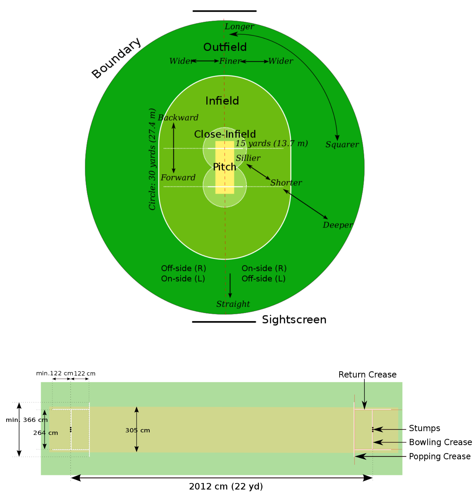

Cricket is one of the most popular sports in the world. It has been around for centuries and is enjoyed by millions of people around the world. It is a bat-and-ball game played between two teams of eleven players. It is a game that is full of excitement and enjoyment.
Cricket is a game of skill and strategy. Bowlers use various strategies to outplay the batsman and fielders use various strategies to stop the batsman from scoring runs. Batting is also a skillful art. Batsmen must have a good eye to spot the ball and be able to hit it hard and accurately.
Cricket is an exciting game to watch and play. It is a game of strategy and skill and can be very competitive. It is a great way to spend time with family and friends. It also allows players to develop their skills and gain.
Cricket has long been known as one of the most popular sports in the world and has a rich history that dates back centuries. Its origins are believed to be derived from a game played in England in the 16th century. The game was initially known as “creckett”, which was based on the French version of the game “croquet”. Later on, the game evolved and was played with a bat and ball, and the modern form of cricket was born.
Cricket’s popularity began to spread to other countries during the 19th century, with the first international cricket match taking place in 1844 between Canada and the United States. Since then, the game of cricket has seen a number of great players and memorable tournaments. Some of the most famous players of the game include W.G. Grace, Sir Donald Bradman, Sachin Tendulkar and Brian Lara. Tournaments such as the Ashes, the World Cup, the Champions Trophy and the Indian Premier League have been some of the most celebrated events in cricket history. Cricket grounds have also been home to some of the greatest cricket matches ever played. Some of the most iconic cricket grounds include Lord’s in London,
Every game of cricket is governed by the Laws of Cricket, so it’s important to understand the rules and regulations of the game.
The objective of cricket is to score more runs than the opposing team.
A cricket playing area typically consists of the pitch, the surrounding turf, the protective screens, and the two sets of stumps at either end of the pitch. The pitch is a flat surface 22 yards long and 10 feet wide, with a set of stumps at either end. The pitch is usually marked out with a series of painted lines. The turf is the area immediately surrounding the pitch, and is usually covered in grass. Protective screens are placed around the edges of the turf to protect the players and spectators from the ball. Finally, the two sets of stumps are the wooden posts that are used to form the wicket at each end of the pitch.
A cricket match starts with a toss. The captain of the team winning the toss decides whether to bat first or field first in a cricket match. The team that gets to bat first takes their positions in the batting order and the bowlers of the fielding team take their positions. The match officially starts with the first ball being bowled.
The scoring system of cricket is based on a combination of runs, wickets, and extras. Runs are scored when a batsman hits the ball and takes a run or runs before the fielding team can return the ball to the wicket. A batsman can score runs by hitting boundaries (four or six runs) or running between the wickets (one or two runs). Wickets are taken when a bowler bowls a ball and the batsman is dismissed either by being bowled, caught, run out, stumped, or hit wicket. A wicket is taken for each dismissal. Extras are any runs that are scored by the batting team without the batsman hitting the ball. These include no-balls, wides, byes, leg byes, and penalty runs. The total score for a team is calculated by adding up all of the runs, wickets, and extras that they have scored. The team with the highest score at the end of the match is the winner.
The fundamental skills involved in the game, include:
The duration of a cricket match can vary depending on the type of match. Test matches can last up to five days, while One Day Internationals can last for up to eight hours.